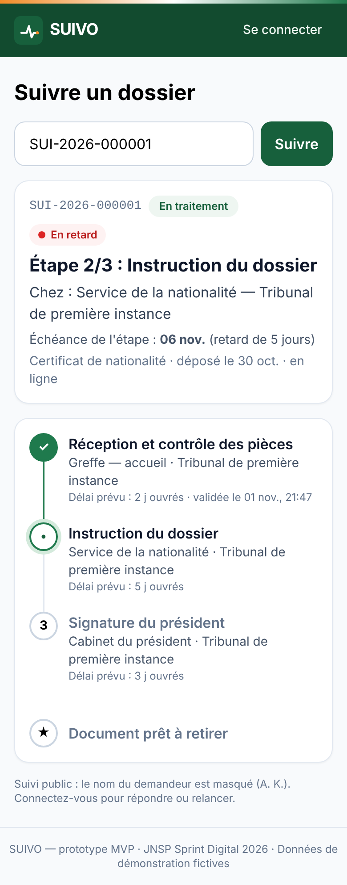
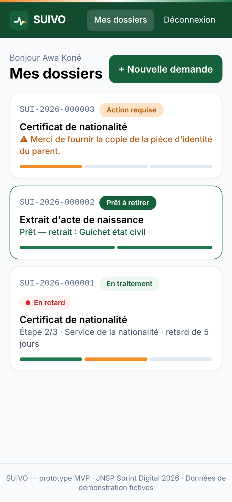
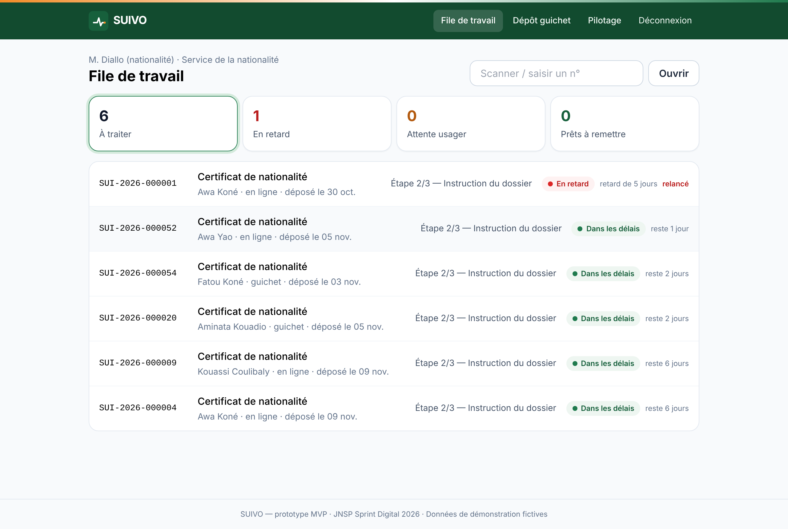
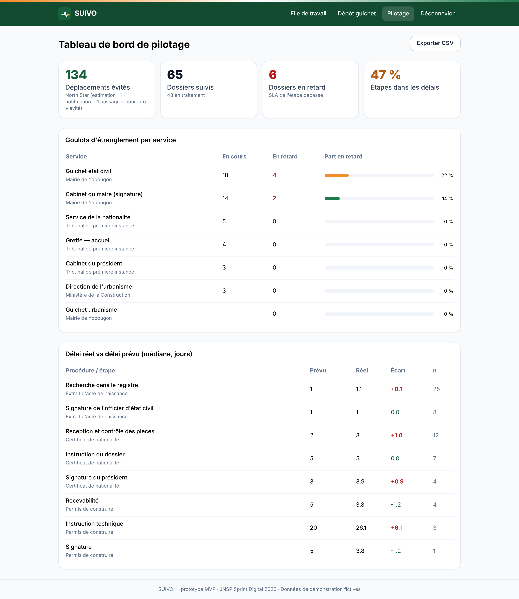

JNSP 2026 · Sprint Digital · Suivi des demandes administratives
Votre dossier administratif, suivi comme un colis.
Plateforme web & mobile (PWA) · SMS · WhatsApp · USSD
Le problème
déplacements pour un seul document, dont la plupart pour demander « où en est mon dossier ? »
FCFA perdus par demande en transport, en heures de travail et en intermédiaires
visibilité sur l'étape, le service responsable et le délai réel, pour l'usager comme pour l'État
Le dossier papier circule entre plusieurs services sans identifiant commun. Personne, même pas l'administration, ne sait où il est, qui le traite ni quand il sera prêt. Résultat : guichets saturés, démarcheurs et perte de confiance.
La solution


Le parcours
En ligne ou au guichet → n° SUI-2026-… par SMS
Le dossier passe de service en service, chaque étape avec son délai (SLA)
Notification à chaque étape ; pièce manquante envoyée à distance ; relance si retard
« Votre document est prêt » → un seul déplacement
Personne n'est laissé de côté : dépôt assisté au guichet, SMS sur téléphone basique, USSD et messages vocaux en dioula et baoulé (feuille de route).
Démo — MVP fonctionnel


React + Tailwind (PWA) · Node.js + Express · PostgreSQL · OTP · journal d'audit immuable · 7 tests de bout en bout
Marché
démarches administratives par an en Côte d'Ivoire
démarches à plusieurs étapes dans les 201 communes et les grands organismes
25 communes et 2 organismes nationaux
Ensuite : extension aux 8 pays de l'UEMOA, qui partagent une organisation administrative et le Mobile Money.
Modèle économique
| Source | Payeur | Prix | Poids an 3 |
|---|---|---|---|
| Licence SaaS | Communes | 3–12 M FCFA / an | |
| Licence + intégration | Ministères, organismes | 25–60 M FCFA / an | |
| Mise en place | Administrations | 2–15 M FCFA | |
| Services premium | Usagers (optionnel) | RDV, livraison : 500–2 000 FCFA | |
| API B2B | Banques, notaires, RH | 100 FCFA / appel |
Le suivi de base est toujours gratuit. Marge brute récurrente supérieure à 75 %.
Positionnement
| Statu quo (guichet) | Portails de dépôt sectoriels | Grands guichets uniques (type Irembo) | SUIVO | |
|---|---|---|---|---|
| Suivi inter-services | ✗ | partiel | ✓ | ✓ |
| Dépôt papier aussi suivi | ✗ | ✗ | partiel | ✓ reçu QR |
| SLA et délais réels mesurés | ✗ | ✗ | partiel | ✓ |
| SMS, USSD, sans smartphone | — | ✗ | ✓ | ✓ |
| Déploiement en semaines | — | ✗ | années | ✓ pilote en 3 mois |
Avantage durable : une bibliothèque de procédures modélisées et des données de délais réels que personne d'autre n'a.
Mise sur le marché
1 commune d'Abidjan + 1 tribunal ; 3 procédures ; gratuit ; mesure avant/après
Convention avec le ministère ; 12 communes ; 1er organisme national ; prix JNSP comme vitrine
25 communes ; API B2B ; USSD ; intérieur du pays avec des agents relais ; préparation UEMOA
Canaux : sponsor ministériel · associations de communes · affiches et QR dans les halls d'attente · reçu de dépôt · radios de proximité · bailleurs GovTech.
Projections financières (scénario central, FCFA HT)
| Année 1 | Année 2 | Année 3 | |
|---|---|---|---|
| Administrations clientes | 3 | 13 | 26 |
| Demandes suivies | 33 000 | 297 000 | 648 000 |
| Chiffre d'affaires | 12 M | 131 M | 256 M |
| Marge brute | 30 % | 73 % | 77 % |
| EBITDA | −42 M | −57 M | −21 M |
| Équipe | 8 | 14 | 17 |
Scénario pessimiste (paiement de l'État à 6 mois, −40 % de clients) : la trésorerie reste positive sur 36 mois. Coût complet ≈ 430 FCFA par demande suivie, contre ≈ 7 000 FCFA perdus aujourd'hui par l'usager.
Équipe & organisation
Relation avec les ministères et les communes, levée de fonds, vision
Architecture, sécurité, intégrations, USSD/SMS
Recherche utilisateur, backlog, adoption par les agents
Squads autonomes par mission (Usager · Administration · Plateforme) · OKR trimestriels · culture de l'écrit · décisions fondées sur les données. Conseil consultatif : un ancien haut fonctionnaire, un expert GovTech, un juriste données (ARTCI).
Notre demande
Objectif : 10 000 déplacements évités par mois dès la fin du pilote.
Plus aucun Ivoirien ne se déplace pour demander « où en est mon dossier ? ».